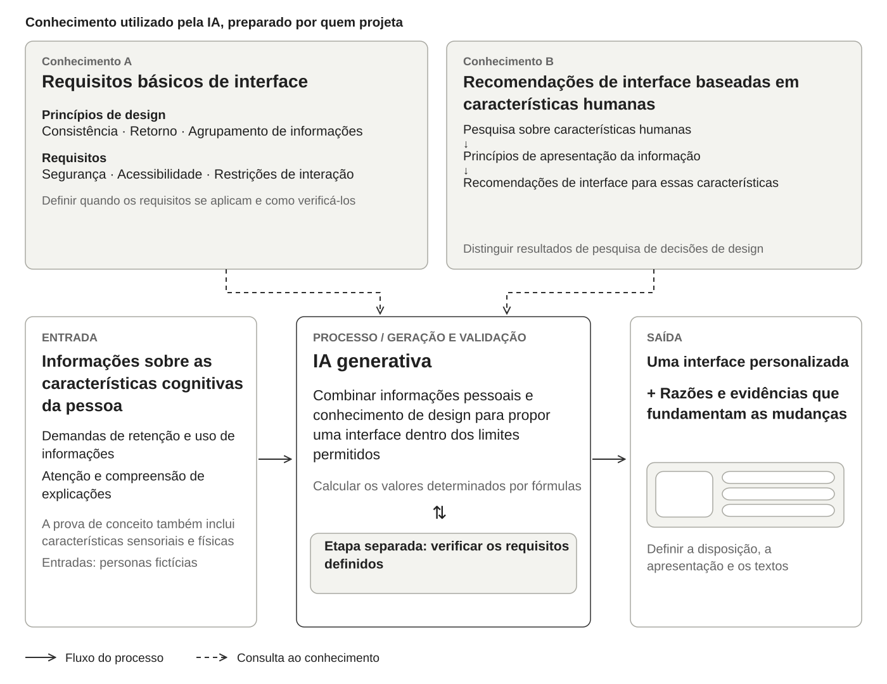
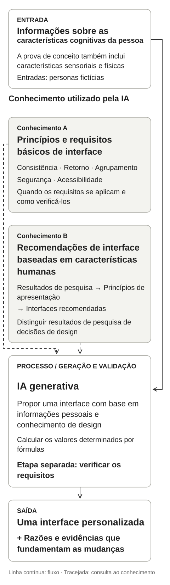
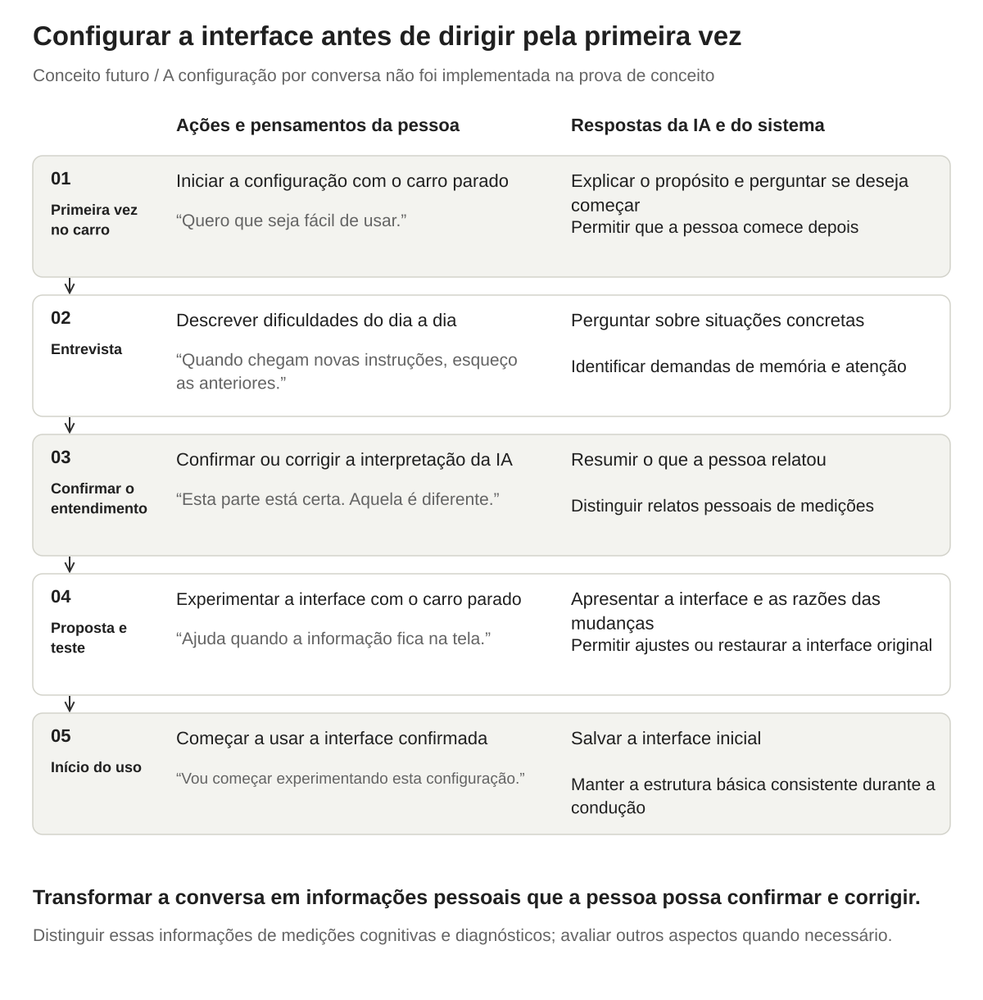
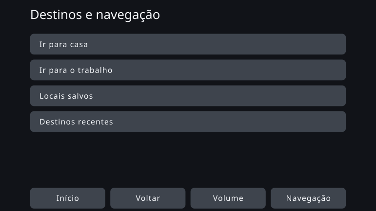
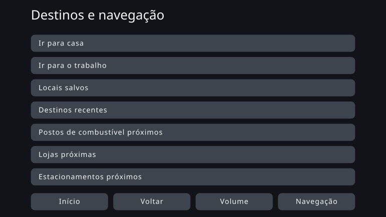
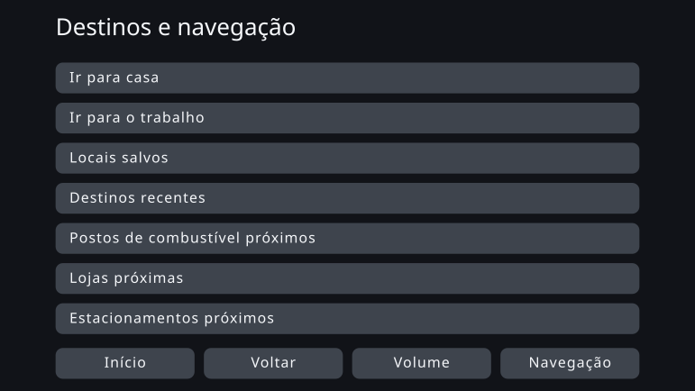

Personalização de interfaces por meio do design orientado por restrições
Agosto de 2026
Visão geral
Este projeto propõe um sistema que recebe informações sobre características cognitivas relevantes para o uso de interfaces e gera uma interface adaptada à pessoa. Ele combina princípios de design de interfaces, requisitos de segurança e acessibilidade e pesquisas sobre características humanas.
Usei uma abordagem que chamo de design orientado por restrições: as pessoas definem os requisitos e quando eles se aplicam, e a IA generativa desenvolve propostas concretas dentro desses limites. Usando a navegação automotiva como caso de teste, construí uma prova de conceito que gera interfaces para 13 personas fictícias, incluindo características sensoriais e físicas, e valida a saída em relação aos requisitos em uma etapa separada.
A comparação revelou uma mudança clara na organização da tela em resposta a uma característica física, enquanto a maioria das saídas apresentou pouca alteração visual. A usabilidade e a segurança não foram testadas com usuários. O trabalho ajudou a identificar quais decisões poderiam ser deixadas para a IA generativa e quais requisitos limitavam a margem de personalização.
Contexto: quantas necessidades diferentes uma única interface pode atender?
A maioria dos produtos oferece uma interface comum, pensada para o maior número possível de pessoas. Mas as pessoas diferem na quantidade de informação que conseguem processar de uma vez, na facilidade de direcionar a atenção, de entender os textos e de operar controles pequenos com precisão. Uma interface projetada para atender a muitas pessoas ainda pode ser pouco adequada a um indivíduo.
A avaliação em grupo também tem limites. Por exemplo, as diretrizes voluntárias publicadas pela NHTSA em 2013 exigem que pelo menos 21 de 24 participantes atendam a cada critério de aceitação relativo aos desvios do olhar. Isso não significa que todos consigam usar a interface igualmente bem. [1]
Mesmo quando um produto permite mudar o tamanho do texto ou a quantidade de informação exibida, o usuário precisa primeiro descobrir as configurações, reconhecer sua relação com as próprias dificuldades e escolher um ajuste adequado. Comecei me perguntando se essas opções eram pouco usadas, deixando as pessoas com interfaces que não lhes serviam bem.
Na navegação automotiva, olhar para a tela e operá-la compete com a atenção necessária para dirigir. [1] Se uma interface pouco adequada acrescenta esforço, vale explorar se uma interface adaptada desde o início poderia favorecer tanto a usabilidade quanto a segurança.
A IA generativa tornou possível prototipar um processo que transforma informações pessoais e conhecimentos de design em uma interface. Explorei se isso poderia reduzir o trabalho de projetar manualmente uma interface diferente para cada pessoa.
Este projeto não examinou com que frequência as pessoas usam essas configurações nem como uma interface pouco adequada afeta o risco de acidentes.
Proposta: combinar informações pessoais com dois tipos de conhecimento de design
O sistema recebe informações sobre características cognitivas relevantes para o uso de interfaces. Esta prova de conceito usou personas fictícias que também incluíam características sensoriais e físicas. A IA considera essas informações junto a dois conjuntos de conhecimentos preparados previamente: regras básicas de design de interfaces e conhecimentos que relacionam características humanas a recomendações de interface.
A IA gera uma interface dentro dos limites permitidos, e uma verificação separada a valida em relação aos requisitos. A saída inclui a interface adaptada e uma explicação do que mudou e por quê.


Entrada: informações sobre a pessoa
As entradas incluem a facilidade com que uma pessoa mantém e usa informações, o quanto outros estímulos a distraem e quais tipos de explicação ela entende melhor. A implementação também abrange visão e destreza manual. Usa informações relevantes para a interação com uma interface, em vez de determinar a tela apenas com base em um diagnóstico.
Conhecimento A: requisitos básicos de interface
Esse conjunto abrange princípios básicos de design de interfaces: consistência, resposta às ações, agrupamento de informações e visibilidade de textos e controles. Também define restrições de interação no veículo e requisitos de acessibilidade, junto com as situações em que se aplicam.
Conhecimento B: conectar características humanas a recomendações de interface
Esse conjunto conecta pesquisas sobre características humanas a princípios de apresentação da informação e, depois, ao design de interfaces. Por exemplo, a dificuldade de manter informações em mente durante uma tarefa sugere reduzir as demandas de memória, o que pode levar a manter na tela as informações necessárias.
Os resultados de pesquisas não fornecem necessariamente valores específicos de design para uma interface de navegação automotiva. Distingo o que a pesquisa estabelece dos julgamentos de design que extraio dela. Melhorias que beneficiam a todos entram nas regras básicas, em vez de serem contadas como resultados da personalização.
Experiência proposta: encontrar uma interface adequada antes de dirigir pela primeira vez
Conceito futuro: a configuração por conversa não foi implementada nesta prova de conceito.
Imagine sentar-se pela primeira vez ao volante de um carro novo. Com o carro parado, um agente de IA pergunta sobre suas experiências habituais. Em vez de navegar por configurações técnicas, você descreve o que considera difícil e o que funciona bem para você.

-
Antes da primeira viagem: iniciar a conversa
IA: “Para adaptar a tela a você, pode me contar um pouco sobre como costuma usar interfaces? Podemos fazer isso depois, se preferir.”
O usuário entende a finalidade e escolhe se quer começar agora ou depois.
-
Entrevista: descrever dificuldades
IA: “Quando as instruções de navegação vêm uma após a outra, o que fica difícil de acompanhar?”
Usuário: “Quando chega a próxima instrução, às vezes esqueço o que a anterior dizia.”
A IA pergunta sobre situações específicas e identifica dificuldades relacionadas à memória e à atenção.
-
Verificar o entendimento: permitir que o usuário corrija a IA
IA: “Parece que manter as informações na tela seria mais fácil do que lembrar as etapas. Entendi corretamente?”
O usuário confirma ou corrige a interpretação da IA. As informações relatadas na conversa são mantidas separadas de medições cognitivas e diagnósticos. Qualquer informação que exija medição seria avaliada à parte.
-
Proposta e teste: explicar as mudanças e experimentar a interface
IA: “Para reduzir o que você precisa lembrar, sugiro uma tela que mostre tanto a ação atual quanto a próxima etapa.”
Com o carro parado, o usuário experimenta tarefas como escolher um destino. Pode dizer: “A versão anterior era mais clara” ou “Eu mudaria este texto”. A proposta pode então ser ajustada, ou a interface original pode ser restaurada.
-
Começar a usar a interface confirmada
A interface confirmada é salva como configuração inicial. Sua estrutura básica permanece consistente enquanto o carro está em movimento, para que o usuário possa contar com o que aprendeu. Ele pode revê-la e ajustá-la com o carro parado.
A conversa busca estabelecer uma configuração inicial adequada por meio de uma troca em que o usuário pode explicar suas necessidades e corrigir mal-entendidos. Não é uma classificação única e definitiva do usuário.
Implementação: separar requisitos fixos de decisões deixadas para a IA
Implementei o processo desde o recebimento de informações sobre as características de uma pessoa até a geração, validação, renderização e comparação de interfaces. Em vez de uma entrevista por conversa, usei como entrada 13 personas fictícias com características diferentes.
Escolhi a navegação automotiva porque ela oferece requisitos concretos: área da tela, tamanho dos alvos de toque, quantidade de informação exibida e interações permitidas durante a condução.
A abordagem de design orientado por restrições
Neste projeto, design orientado por restrições significa que as pessoas definem os requisitos e quando se aplicam, e a IA propõe soluções dentro desses limites.
Uma abordagem paramétrica baseada em regras define antecipadamente qual valor ou opção corresponde a cada entrada. Aqui, defini os intervalos permitidos e as evidências que sustentam cada decisão, deixando à IA generativa a escolha de valores e textos que ainda não estavam fixados. A implementação combina valores calculados com decisões geradas pela IA.
| O que as evidências estabelecem | Como isso é implementado |
|---|---|
| Um valor específico ou uma relação matemática está estabelecido | Calcular o valor dentro das condições verificadas e do âmbito de aplicação |
| A direção do ajuste é conhecida, mas não sua magnitude | Escolher um valor compatível com essa direção e com as restrições e registrá-lo como julgamento de design ainda não testado |
| As evidências não determinam uma escolha adequada | Tratar o resultado como uma proposta exploratória que exige avaliação |
Ao traduzir resultados de pesquisa em decisões de interface, registrei as fontes, as condições de aplicação e os julgamentos de design. A interface gerada inclui razões para as mudanças, permitindo rastrear por que determinado design foi proposto para determinada pessoa.
Validar a interface gerada em uma etapa separada
A interface é gerada como dados estruturados que descrevem os elementos da tela e sua disposição e, depois, renderizada a partir desses dados. O código verifica requisitos numéricos e estruturais. Uma verificação separada por um modelo de linguagem de grande porte (LLM) avalia alguns requisitos que envolvem interpretação de significado. O sistema também registra itens fora do alcance das verificações automáticas e itens que não podem ser verificados por falta de informação.
Essas verificações estabelecem se a saída atende aos requisitos definidos. A avaliação com usuários ainda é necessária para determinar se ela é mais fácil de usar ou mais segura.
Se forem encontrados requisitos conflitantes durante o design, a IA os identifica e uma pessoa decide como revisá-los. A IA não muda os requisitos por conta própria a cada interface gerada.
Comparação de interfaces: uma mudança clara de layout e um layout quase inalterado
A comparação usa uma interface padrão compartilhada, gerada sem características pessoais como entrada. Comparei-a com interfaces geradas a partir de características pessoais, mantendo o mesmo conjunto de funções.
As imagens abaixo são saídas do protótipo, não um antes e depois do redesenho de um sistema comercial de navegação. As personas são entradas fictícias usadas para examinar os efeitos de determinadas características; não representam usuários reais.
Alvos de toque maiores
PS-12: persona com dificuldade para tocar com precisão
PS-12 tem a mesma idade e as mesmas características cognitivas e sensoriais da persona de referência PS-01; apenas a destreza manual difere. Nas imagens, os alvos de toque são maiores e o número de itens no centro da tela diminui de sete para quatro. Essa contagem exclui os botões fixos na parte inferior.
Interface padrão compartilhada

Interface gerada a partir de características pessoais


Alvos de toque maiores significam menos itens selecionáveis em uma única tela. O design busca preservar o mesmo conjunto de funções, mas esta captura, por si só, não permite estabelecer a facilidade de navegação até as telas seguintes.
Um layout quase inalterado
PS-01: a persona de referência
O tamanho do texto difere um pouco, mas o número de itens, sua disposição e o tamanho dos alvos de toque permanecem praticamente iguais. Com essa combinação de regras e entradas, o layout gerado não diferiu substancialmente da interface padrão compartilhada.
Interface padrão compartilhada


Interface gerada a partir de características pessoais


Resultados e discussão: quanta liberdade restou para a geração?
O valor adicional da IA generativa continua sem comprovação
Na minha comparação visual, PS-12 foi a única saída com uma organização de tela claramente diferente. As outras saídas diferiram nos textos e nas configurações, mas sua aparência não revelou uma diferença substancial de valor.
As mudanças de PS-12 também poderiam ser obtidas por configurações que ajustassem o tamanho de exibição e a quantidade de informação. Pode haver valor em começar com uma interface adequada sem precisar encontrar essas configurações por conta própria. Essa experiência precisa ser avaliada separadamente da necessidade de usar IA generativa para produzir a interface.
Esta prova de conceito não mostrou que adaptar uma interface a características cognitivas melhora o desempenho em tarefas nem que a IA generativa produz uma interface melhor do que uma abordagem baseada em regras.
O espaço de design implementado era estreito
Depois de aplicar os tamanhos mínimos de texto e de alvos de toque, a área da tela e os limites de informação exibida, restaram poucas opções de layout. Muitas partes da implementação também eram determinadas por cálculos ou estruturas fixas, deixando pouca margem para a IA escolher entre alternativas válidas.
Ainda havia flexibilidade nos textos, mas essas diferenças eram menos visíveis que as mudanças de layout, e a avaliação visual não conseguia captar plenamente seu valor. Concluí que avaliar a IA generativa exige um conjunto de propostas válidas cujas diferenças importem para a experiência do usuário.
Essa conclusão se aplica às regras que reuni, aos parâmetros de interface que selecionei e ao conjunto de designs aceito por esta implementação. Ela não estabelece um limite geral da navegação automotiva nem das interfaces personalizadas.
Não consultei diretamente o texto integral de todas as normas JIS, ISO ou outras normas pertinentes. Reuni os conhecimentos de design a partir de artigos disponíveis, orientações oficiais, dados públicos e textos integrais ou prévias de algumas normas. O alcance dessas fontes pode ter afetado as opções de design disponíveis. É necessária uma análise adicional para determinar se as normas abririam mais possibilidades ou imporiam outras restrições.
O trabalho com IA melhorou as próprias regras
Outro resultado foi o processo de definir requisitos para a geração e torná-los verificáveis.
| Problema identificado | Resposta de design |
|---|---|
| Vários limites inferiores se aplicavam ao mesmo elemento, mas sua combinação não estava clara | Esclareci como os limites se aplicam em conjunto, sem violar nenhum deles |
| Um requisito destinado apenas à condução também se aplicava com o carro parado | Especifiquei o estado de condução em que cada requisito se aplica |
| A complexidade dos textos e a presença de ícones estavam combinadas em uma única dimensão de design | Separei-as em dimensões independentes, recuperando opções desnecessariamente excluídas |
| A IA usava requisitos que não se aplicavam à saída gerada | Especifiquei quais requisitos devem ser consultados para cada saída |
| Decisões destinadas à IA haviam sido fixadas na implementação | Revisei a divisão de responsabilidades entre a especificação e a implementação |
A IA identificava problemas, eu os avaliava e as decisões eram refletidas no design. Esse processo iterativo esclareceu quais requisitos deveriam se aplicar a todos e onde uma interface poderia ser personalizada.
Próximos passos: avaliar a personalização e o papel da IA generativa
O próximo passo é investigar duas perguntas separadamente.
Primeiro, qual é o valor de uma experiência que fornece uma interface inicial adequada sem exigir configuração pelo usuário? Isso envolveria implementar a entrevista por conversa, oportunidades de corrigir o entendimento da IA e um teste da interface, avaliando depois a confiabilidade das informações de entrada e o esforço exigido do usuário.
Segundo, em quais contextos de design as diferenças entre propostas geradas por IA poderiam melhorar a experiência? Quero explorar contextos em que os requisitos ainda deixem várias opções válidas de organização da informação e de fluxos de interação.
Um estudo com usuários reais compararia três interfaces na mesma tarefa: a padrão compartilhada, uma interface baseada em regras e ajustada com informações de características pessoais e uma interface gerada por IA. Tempo de conclusão, erros, desvios do olhar e carga de trabalho subjetiva ajudariam a distinguir os efeitos da personalização dos efeitos do uso de IA generativa.
Também pretendo examinar mais de perto as normas pertinentes e refinar a distinção entre evidências de pesquisa e julgamento de design. Além de tornar os requisitos verificáveis, o próximo desafio é preservar, dentro deles, opções que ofereçam diferenças significativas para os usuários.
Referências
- NHTSA, Visual-Manual NHTSA Driver Distraction Guidelines for In-Vehicle Electronic Devices (2013). São diretrizes voluntárias. Consulte VI.E para os critérios de aceitação relativos aos desvios do olhar e I.C e outras seções para a discussão sobre atenção e risco. Isso não significa que a prova de conceito tenha sido certificada como aprovada nesse teste. Ler o documento no Federal Register